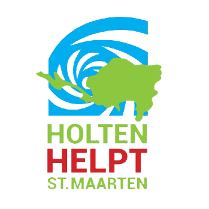
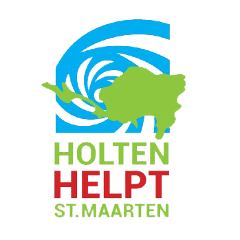
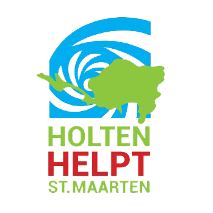
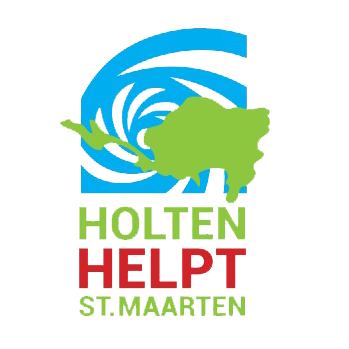

 

We zijn ruim twee maanden verder nadat wij, Suffendo-vrienden en Supergirls-vriendinnen, de stichting Holten Helpt Sint Maarten hebben opgericht. Het doel van de stichting was en is heel simpel: zo veel mogelijk geld zien op te halen voor de wederopbouw van de Sister Magda School op Sint Maarten. En langzaamaan werken wij naar onze einddatum: 9 december 2017. Dat is het moment waarop wij onze activiteiten af sluiten en hopelijk een heel mooi eindbedrag te kunnen noteren.
We hebben sinds de oprichting van de stichting, op 15 september, niet stilgezeten. We hebben geprobeerd om met dezelfde snelheid als orkaan Irma te werk te gaan, maar dat is ons niet gelukt. Niemand kan tippen aan Irma, maar wij weten nu al dat we Irma weer een klein beetje in de hoek hebben weten te drukken met de acties die wij uitgevoerd hebben en nog gaan uitvoeren.
Allereerst willen we nogmaals Geurts & Verbeek Netwerk Notarissen uit Markelo bedanken voor hun kosteloze bijdrage voor het oprichten van de Stichting. En ook Reclamemakers Holten: ontzettend bedankt voor het ontwerpen van het beeldmerk en alle posters en uitingen die we nodig waren voor de diverse acties. Maikel Koopman: ontzettend bedankt voor alle uren die jij besteed hebt voor het opmaken en bijhouden van onze website!
Waar wij met ons allen niet bewust van waren, was hoeveel mensen meegeleefd hebben met iedereen die op Sint Maarten woont. En dan in ons geval Herbert, Karin, Lindi en Thijne in het bijzonder. Ontzettend veel reacties en steunbetuigingen mogen ontvangen voor onze doelstelling en inzet. Onvoorstelbaar hoeveel mensen en organisaties zich geheel belangeloos ingezet hebben voor het goede doel. Vooral ook de kinderen, niet alleen in Holten, maar ook in omliggende gemeenten.
Wat hebben we nu gedaan de afgelopen twee maanden? Veel! Even kijken of we het kunnen samenvatten, zonder de inzet van iedereen tekort te kunnen doen:
We hadden eigenlijk al een vliegende start nadat wij “eindelijk” onze bankrekening geopend hadden: de eerste donaties stonden binnen no time op bankrekening. Op onze kick off op 30 september konden we toen al een tussenstand melden van bijna € 2.000, zonder dat we de acties goed uitgewerkt hadden. Dat gaf ons een enorme stimulans om nog beter ons best te doen.
Binnen onze gelederen hebben we inmiddels een “Chef Chocola”: Timo van Zon. Dankzij een hele gulle gift van Tony Chocolonely waren en zijn wij in staat om de (h)eerlijke Tony Chocolonely repen te verkopen. Maar die repen, die moesten eerst wel opgeslagen en verdeeld worden. Daar is “Chef Chocola” Timo in beeld gekomen. Vol overgave hield en houdt hij strenge controle op de opslag en uitgifte. Je hoeft maar aan Tony te denken en de Chef stond al klaar met de Tony’s.
Inmiddels hebben we extra repen moeten bijkopen omdat we gewoon meer vraag hadden dan aanbod. Kijk, dat drijft de prijs alleen maar op. En voor ons betekende dat: meer in de pot van de Stichting! Wanneer we de acties afsluiten op 9 december, dan hebben we uiteindelijk ruim 5.250 Tony Chocolonely repen weten te verkopen. Wanneer ik dan zeg dat we de repen hebben verkocht voor € 7 (per 3 repen, of € 2,50 per reep), dan kan je al zelf snel de rekensom maken wat dat betekent voor de bankstand van de Stichting.
Die Tony Chocolonely repen, daar is dus een enorme vraag naar. Logisch, want ze zijn echt heerlijk. Die repen hebben we niet alleen verkocht binnen onze eigen bekende kringen, maar we hebben die ook verkocht op de Streekmarkt Holten (7 oktober), op een fair in Voorst op 8 oktober, op een afdelingsavond van de Vrouwen van Nu. Maar we hebben nog een voorraad die we willen verkopen tijdens de sponsorloop op de Haarschool op 1 december en op de Kerstmarkt Holten op 9 december.
Op de behoorlijk winderige en natte Streekmarkt hebben we niet alleen de Tony Chocolonely repen verkocht, maar een brede variatie aan duurzame producten. Allemaal producten die ons ter beschikking waren gesteld. Denk dan gesuikerde pinda’s van de Zuivelhoeve, hamburgers van de Enkco, koffie van Smit & Dorlas, bospaddenstoelensoep van Hotel Hampsire De Broeierd en speculaasharten van Bakker Jan.
Maar dan de acties van de kinderen. Hartverwarmend! Zo hebben de kinderen van de Heeckeren school in Goor een boekenmarkt gehouden. De volledige opbrengst ad € 1.000 ging naar ons goede doel.
Andere basisschoolkinderen hebben zich de benen uit het lijf gelopen om bij Jan en alleman lege statiegeldflessen op te halen. De eerste tussenstanden zijn al binnen, maar deze actie loopt nog.
Gelijk met deze actie loopt de actie bij de 3 Holtense supermarkten. Ook daar kun je de flessenbon doneren.
Op 1 december zullen de Haarschool kinderen hun stinkende best doen tijdens de sponsorloop. Over een kleine twee weken weten we wat daar de opbrengst van zal zijn. Maar wanneer ik al die fanatieke kinderen zie, dan weet ik zeker dat daar een bedrag uit gaat komen, waar we stil van worden. Succes jongens en meisjes!
Ook hebben we op 3 november meegeholpen aan dat ontzettend leuke “Down Under Party” in Daglicht. Er werden speciale “Sint Maarten cocktails” verkocht en er stond een vrije gift box klaar. In ruil daarvoor moesten we een bardienst draaien. Iets wat wij met heel veel plezier hebben gedaan!
Afgelopen week hebben Martijn Meijerink en Corien Guibal contact met ons gezocht. Zij hebben met hun gezin een aantal jaren op Sint Maarten gewoond, maar zijn inmiddels weer (met pijn in hun harten) weer terug in Nederland. Zij waren buren van Herbert en Karin en hebben intens meegeleefd met hun. Niet alleen zij, maar ook hun naaste familieleden. Dat heeft er toe geleid dat zij ook aan het inzamelen zijn geslagen, op wel een heel bijzondere manier. De vader van Martin, Rien Meijerink, exposeert met enige regelmaat. Rien schildert al meer dan 30 jaren landschappen en stadsgezichten en heeft afgelopen vrijdag zijn expositie geopend. De opbrengst van alle schilderijen, die tijdens deze expositie verkocht worden, zullen volledig gedoneerd worden voor ons Stichtingsdoel. Ook om stil van te worden. De familie Meijerink had ook ten doel om de Sister Magda School te ondersteunen. Nu hebben we dus beide doelen samengevoegd tot 1 doel.
De expositie loopt tot 6 december a.s. Kijken kan en mag in Raadhuis De Paauw, Raadhuislaan 22 in Wassenaar.
Dat zijn alle acties die nog lopen (of afgerond zijn). Maar het is nog geen 10 december, dus we hebben nog wat in petto. Wat? Denk dan nog aan:
Maar dan de hamvraag: waar staan we “nu” qua opbrengsten en donaties? Nou, eigenlijk verbazingwekkend goed. Ons streefbedrag van € 15.000 zijn we al voorbij. Mooi hè? Word je toch stil van? Wat we daar allemaal al niet voor kunnen doen. Maar: we zijn er nog niet. Deze stand, dat is nog de tussenstand. We werken toe naar 9 december met alle acties die we op de rol hebben en streven naar een ontzettend mooi eindbedrag. Hoeveel dat wordt? Geen idee, maar wanneer je op zaterdagavond 9 december omstreeks 18.30 uur op de Kerstmarkt bent, dan weet je het.
Tot dan, of eerder!